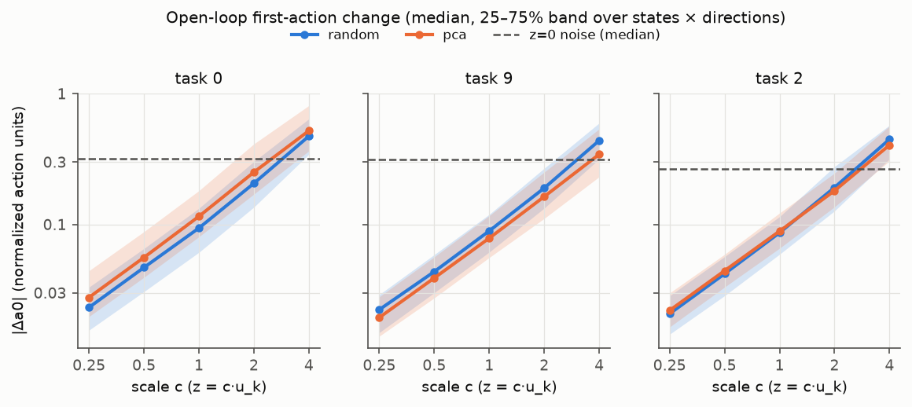
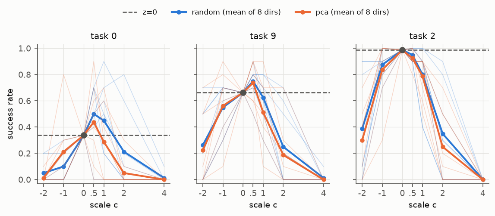
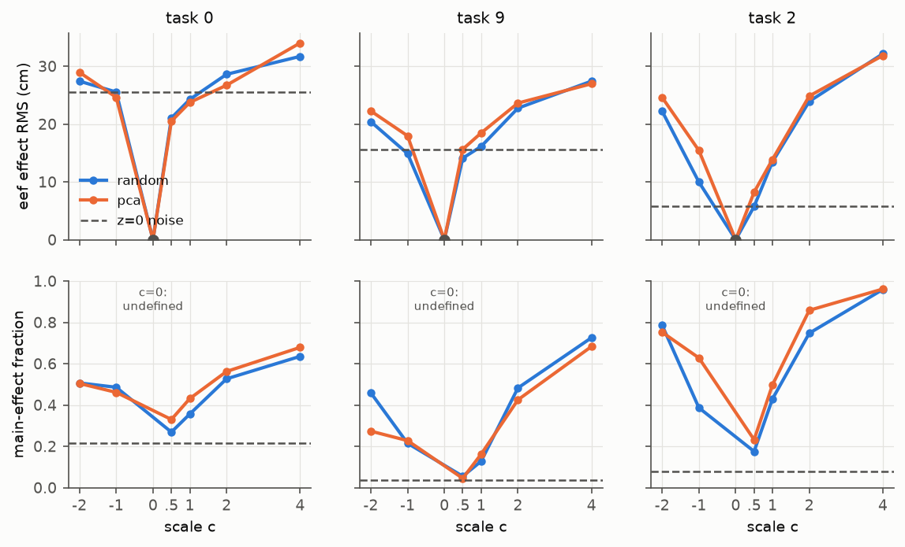
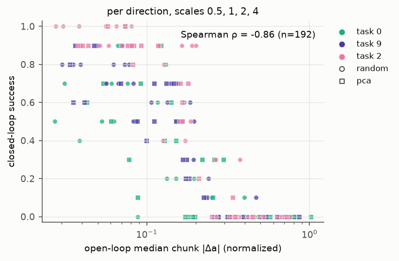
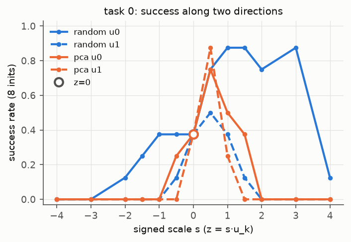
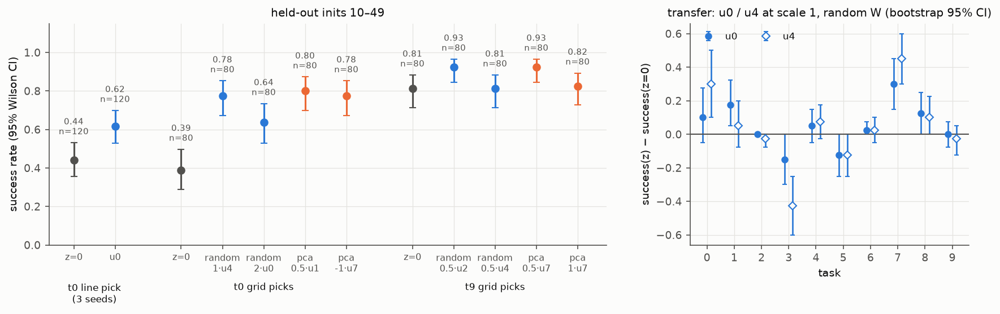
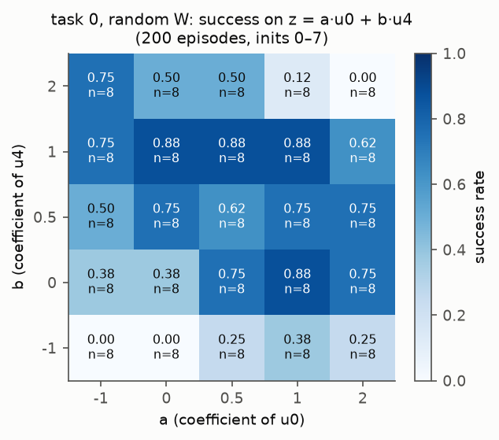

SmolVLA z → FiLM steering on LIBERO-Object (minimal test)
Question: does a low-dim z injected as FiLM on the action expert act like a usable control
space (effect beyond policy noise, consistent across init states, smooth, reachable gains),
before any closed-loop optimization of z?
Setup: HuggingFaceVLA/smolvla_libero, libero_object, expert_film on expert MLP outputs of
layers 7,15,23,31, d=8, same γ/β for all denoising steps. Two W: random (Gaussian, γ and β,
α=0.3) and pca (top-8 PCs of each layer's MLP output over 24 default episodes of the same
task, β only, scaled by √λ, α=3.0). α is matched so the median open-loop |Δa0| at scale 1 is
≈0.1 (normalized action units) for both. z = scale·u_k, u_k ~ N(0, I8) (z_seed 0, the same 8
directions for every task and W). Flow-matching noise is seeded per (init, rep), so every z is
paired with the z=0 episode of the same noise; z=0 reruns are bit-identical across processes.
The policy replans every step (n_action_steps=1).
Code: research/{run,openloop,openloop_summary,analyze}.py; HPC platforms/hpc/slurm/steer_{pair,lines}.sbatch.
Raw outputs: out/libero/smolvla/steer/ (local) and Sol results/smolvla/steer/.
Notation
W (part of the injection): fixed matrix mapping z to FiLM parameters, [γ;β] = α·W·z, applied to
the expert MLP outputs of layers 7,15,23,31. random W is shared by all tasks; pca W is fitted per task.
z ∈ ℝ⁸. Test points are z = c·u_k: c is a scalar scale (x-axis "scale c"), u_k (k = 0…7) are 8
fixed random vectors drawn once from N(0, I₈). U only chooses which z points to probe (8 rays through
z=0); it is not part of the model. u_k are not normalized (‖u_k‖ 1.86–3.53).
Paired noise: episode (init r, rep j) uses flow-noise seed seed + r + 1000·j for every z, so z vs
z=0 differences come from z alone. Grid/val/transfer ran on Sol, line/plane/open-loop/t7/speed locally;
comparisons are always within one run.
eef effect: eef (end-effector) xyz at steps 20, 40, …, 200 (held after the episode ends); effect =
RMS distance (cm) between an episode with z and the z=0 episode with the same (init, noise).
z=0 noise: the same distance between z=0 rep j and rep 0 of the same init — how much the path moves
when only the noise seed changes. At c = 0 the effect is exactly 0.
main-effect fraction: for one (W, c), the share of Σ‖effect‖² explained by per-direction means over
inits (1 = a direction pushes the same way from every init; ≈1/#inits = no consistency). The noise line
is the same statistic with noise reps as "directions". Undefined at c = 0.
held-out: z is chosen on some inits (grid 0–9, line 0–7) and then evaluated, paired with z=0, on
inits never used for choosing (10–49 etc.), so selection luck does not inflate the result.
Open-loop sensitivity (no sim; 96 saved policy inputs per task)
Action noise is large: resampling flow noise at z=0 moves a0 by sd ≈ 0.29–0.35 (normalized).
Median |Δa0| is linear in scale (random α=0.3: 0.023, 0.047, 0.094, 0.21, 0.47 at
scale 0.25…4); below ~0.1·(this α) a bf16 rounding floor (~0.002) dominates.
Heavy tails: in t0/t9 the 99th pct jumps to ~0.8 already at scale 0.5 (mode switches);
t2 (unimodal) stays ≤0.24 at scale 1. PCA W has heavier tails at matched median.
∂a0/∂z per state: effective rank ≈ 4.3 of 7 (random), 3.9 (PCA); Jacobian consistency across
states 0.22–0.5 random, 0.17 PCA (null ≈ 0.01): a z direction has a partly shared meaning.

Open-loop |Δa0| vs scale (median, 25–75%), with the z=0 noise level
(±c means are over different directions, so +1 vs −1 differences are direction sampling, not sign.)
Other metrics (hpc/grid_metrics.json, from research/analyze.py):
Trajectory effect (eef xyz at steps 20…200, paired with z=0) vs noise effect (z=0 rep j vs
rep 0): about equal at scale 0.5, larger from scale 1 (t2: 13.5 vs 5.8 cm).
Main-effect fraction (share of the effect explained by the direction, consistent across
inits): ≈ noise level at 0.5, 0.13–0.5 at 1, 0.5–0.96 at ≥2 (mostly shared failure modes).
Overdispersion of per-direction success over binomial: 2–6 at |scale| 1–2 → directions differ
reliably; there is structure to search over.
Best-of-8 per init is uninformative: 8 noise reps at z=0 already reach 0.9–1.0.
Closed-loop antisymmetry (cos of mean effects of +u, −u): ≈0 for random, −0.2…−0.56 for PCA at
scale 1; positive at 2 (both signs fail the same way).
Which directions are harmful is shared across tasks (same random W/U): corr of per-direction
success at |s|=2 = 0.55–0.90 between tasks.
Confounded: u_k are not normalized (‖u_k‖ = 1.86, 3.17, 2.03, 1.88, 1.94, 3.53, 2.97, 2.71),
and per-direction success tracks ‖u_k‖ (random W: Spearman −0.6…−0.9), so this is largely
"longer z hurts more". The picked u0/u4 are the two shortest. Normalize u_k in future runs.
Open-loop predicts closed-loop: per-direction median chunk |Δa| vs success, Spearman ρ =
−0.6…−0.97 at scale 1–2 (pooled over tasks/W/scales ρ = −0.86).

Grid success vs scale; thin lines = single directions; c=0 is z=0

eef effect and main-effect fraction vs scale; dashed = z=0 noise reference

Per-direction open-loop chunk |Δa| vs closed-loop success
Smoothness: line scans on t0 (local, 2 directions × 12 scales × inits 0–7)
Success along z = s·u_k (z=0: 0.38):
s
−4
−3
−2
−1.5
−1
−0.5
0.5
1
1.5
2
3
4
random u0
0
0
.12
.25
.38
.38
.75
.88
.88
.75
.88
.12
random u1
0
0
0
0
0
.12
.50
.38
.12
0
0
0
pca u0
0
0
0
0
0
.25
.75
.50
.38
0
0
0
pca u1
0
0
0
0
0
0
.88
.25
0
0
0
0
Unimodal along each line; random W has a wide plateau, PCA W a narrow window (|s| ≲ 1).

t0 line scans: success along z = s·u_k
Held-out validation (inits 10–49, unseen during selection)
Grid picks (top-2 of 48 (dir, scale) per task/W by success on inits 0–9; val/selection.json),
held-out inits 10–49 × 2 noise reps, n=80 paired with z=0:
task
z=0
W
pick (dir, s)
grid
held-out
wins/losses
sign p
t0
0.39
random
4, +1
0.9
0.78
36/5
8e-7
t0
random
0, +2
0.8
0.64
25/5
3e-4
t0
pca
1, +0.5
0.9
0.80
34/1
2e-9
t0
pca
7, −1
0.8
0.78
34/3
1e-7
t9
0.81
random
2, +0.5
0.9
0.93
10/1
0.012
t9
random
4, +0.5
0.8
0.81
2/2
1
t9
pca
7, +0.5
0.9
0.93
10/1
0.012
t9
pca
7, +1
0.9
0.83
12/11
1
One round of random search over z already finds gains that generalize to unseen inits and
noise (t0 roughly doubles); in-sample grid numbers overestimate (winner's curse): the top
pick holds everywhere, second picks only on t0. Both W reach the same level.
What the t0 picks change (held-out, from eef/gripper state): z=0 failures are mostly missed
grasps — 92% of failed episodes close the fingers on air (width < 1 cm) at least once; such
empty closes occur in 69% of all z=0 episodes vs 16% (random d4, +1) and 17% (PCA d1, +0.5).
(The 6 cm "closed" threshold in analyze.py is below the soup can's width, so its grasp-time
column is not meaningful for t0.)

Held-out success (95% Wilson CI) and cross-task transfer (bootstrap CI)Interactive 3D eef paths (drag to rotate). Top: t0 init 0 along z = s·u0. Bottom: t0 held-out z=0 vs the random-W pick (d4, s=+1), same noise; choose an init.
Cross-task transfer (random W; u0, u4 at s=1 picked on t0; inits 10–29 × 2 reps, n=40/task)
Same W and directions on every task, so a z found on t0 can be applied as is:
task
0
1
2
3
4
5
6
7
8
9
z=0
.45
.75
1.0
.90
.90
.95
.93
.33
.85
.85
u0
.55
.93
1.0
.75
.95
.82
.95
.62
.97
.85
u4
.75
.80
.97
.47
.97
.82
.95
.78
.95
.82
Paired over all tasks: u0 43 wins / 23 losses (p=0.019), u4 53/37 (p=0.11). t7 (the other low
task, never used for selection) gains most (u4 +18/−0); t3 is hurt (u4 −18/+1), t5 mildly.
Effects are partly task-general but a single z is not a universal improvement → task/context-
conditioned z is needed for a "policy adaptation" use.
Landscape: plane scan on t0 (random W, z = a·u0 + b·u4, inits 0–7, z=0: 0.38)
a \ b
−1
0
0.5
1
2
−1
0.00
0.38
0.50
0.75
0.75
0
0.00
(0.38)
0.75
0.88
0.50
0.5
0.25
0.75
0.62
0.88
0.50
1
0.38
0.88
0.75
0.88
0.12
2
0.25
0.75
0.75
0.62
0.00
A broad, smooth ridge (0.75–0.88 over a ∈ [0, 2], b ∈ [0.5, 1]) with failure toward b = −1 and
large |z|: friendly to local search / CEM with a norm bound.

t0 plane scan: success on z = a·u0 + b·u4 (8 inits per cell)
Style without failure (grid, successful episodes only)
t2 z=0 successful episodes take 122 ± 10 steps. At ~0.9 success, PCA dirs 0/4 give 107 steps at
s=+1 and 154/165 at s=−1 (monotone, sign-odd: a speed knob); across directions successful
episode length spans 101–185 steps. Random W directions change length less systematically.
Held-out check (t2, PCA, inits 10–29, paired, val-t2-speed-pca): z=0 1.00 success, 119 steps.
−u0 / −u4: 1.00 success, +29 / +32 steps (Wilcoxon p ≈ 9e-5); +u0 / +u4: 0.80 / 0.85 success,
−11 / −9 steps on episodes where both succeed (p = 0.007 / 0.04). Slowing is free, speeding up
costs success.
Takeaways
z → FiLM on the action expert is a real control space, not just noise: from |s| ≈ 1 the
trajectory change exceeds flow-noise resampling, it is partly consistent across init states,
directions differ reliably (overdispersion 2–6). Part of that spread is just ‖u_k‖ (u_k were not
normalized), so direction-vs-magnitude effects are not separated yet.
The usable region is a bounded ball. Success is an inverted U in |z|: s ≤ 1 (median open-loop
|Δa0| ≲ 0.1, chunk |Δa| ≲ 0.15–0.2) is usable, s ≥ 2 mostly breaks the policy, s = 4 always.
Open-loop chunk |Δa| predicts closed-loop failure (ρ ≈ −0.86) → a cheap, sim-free trust region
or normalization for z before optimization.
Reachability/optimizability looks good: one round of random search over 48 candidates on 10
inits gives held-out gains (t0 0.39 → 0.78–0.80, t9 0.81 → 0.93); success along lines and the
2-D plane is unimodal and smooth. CEM over a norm-bounded z should be sample-efficient; the
main risk is selection noise → score candidates with paired noise, several inits, and keep a
held-out set.
Random vs PCA W: similar best-case gains. PCA has a narrower safe window (fails by |s| ≈ 1.5),
heavier open-loop tails and a more sign-odd closed-loop response; its directions read more
like knobs (validated speed knob on t2: slow +30 steps at no cost, fast −10 steps at −15–20%
success). Random W has the wider plateau.
Evaluation for later optimization: paired-noise success on held-out inits (primary), paired
effect/noise ratio and main-effect fraction (controllability), open-loop |Δa| (budget).
Per-init best-of-K is useless here (8 noise reps at z=0 already reach 0.9–1.0).
Caveats: u_k not normalized (see grid section), one W seed per scheme, d=8 and layers 7,15,23,31 fixed, libero_object only, grid on
10 inits; z=0 rates differ between laptop and Sol (e.g. t9 5/8 local vs 0.81 held-out on Sol),
so comparisons are always paired within one machine.